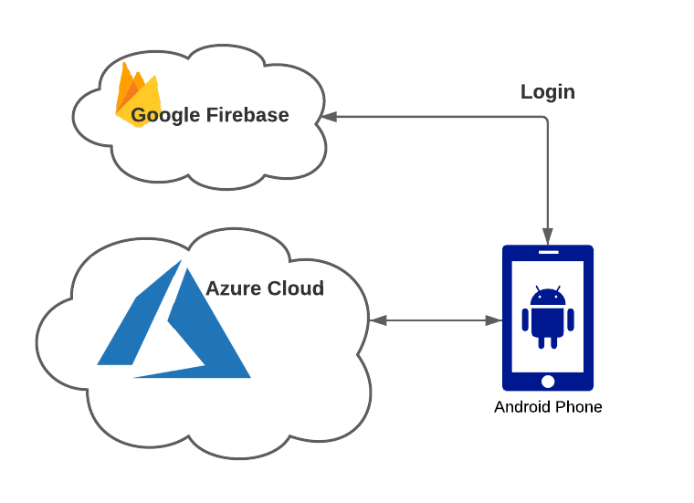
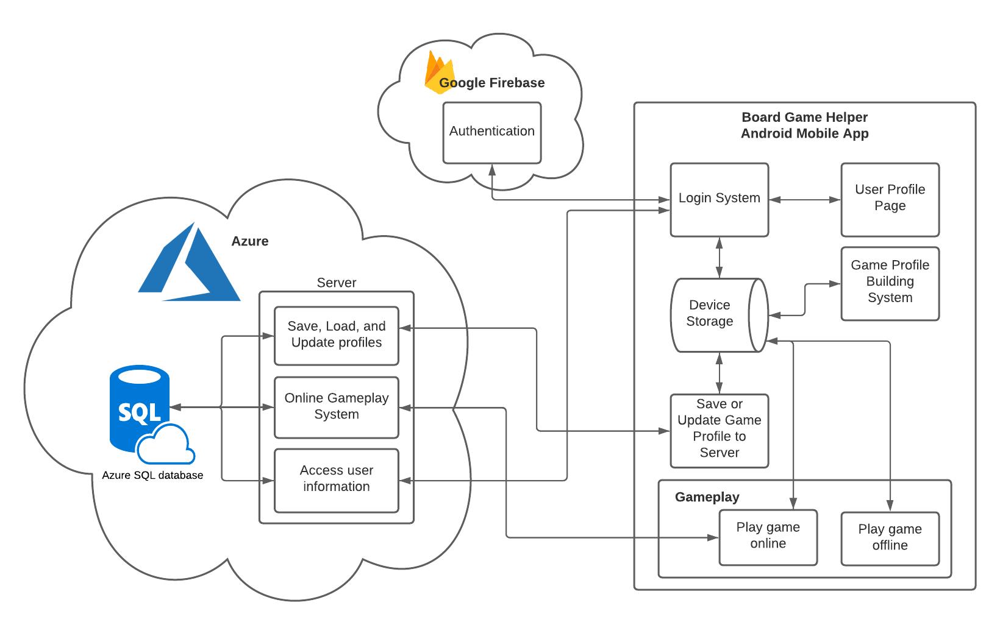

Here is concise list of the primary technologies used:
- C#
- Xamarin
- SignalR
- ASP.NET
- Google Firebase
- Azure
- Microsoft SQL
- Postman (API testing)
- GitLab (version control, issue management)
Board Game Helper is an Android mobile application developed with Xamarin and C#. The mobile application supports many offline features, such as game profile creation and play. However, the app's full potential is realized through its online features, which include cloud storage of game profiles, managing personal profiles saved to the cloud with an authentication system, and playing games online in real-time. These online features are supported by a server developed with C# and ASP.NET Web API, hosted on Azure, along with a Microsoft SQL database. User authentication is handled with Google Firebase. Here is a very simple illustration of this architecture at a high level:
Game profile saving, updating, and retrieving is accomplished through HTTP requests the mobile app makes to the server's API, while real-time online play leverages the speed of SignalR. Here is a more detailed overview of the system's architecture:
Here is concise list of the primary technologies used: